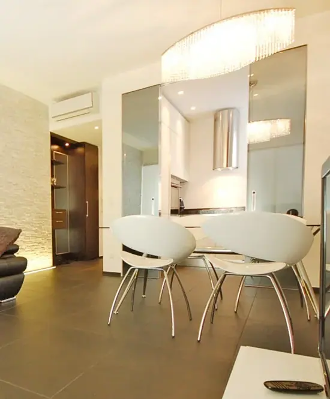
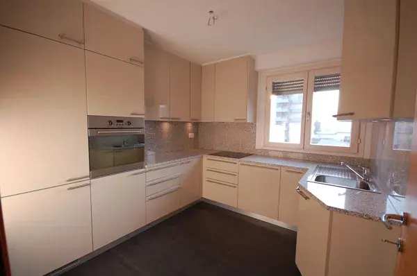

Cosa facciamo
Rinnoviamo facciate e coperture: intonaci, isolamento e tetti. Sono lavori che proteggono l'edificio e ne cambiano l'aspetto, come nella palazzina di Magliaso.
- Ponteggi e messa in sicurezza
- Risanamento e nuovi intonaci di facciata
- Isolamento termico
- Lavori su coperture e lattonerie
Cosa ricevi
- Sopralluogo e preventivo senza impegno
- Preventivo con voci e quantità scritte
- Prezzo, tempi e capitolato firmati prima di iniziare
- Un capocantiere di riferimento che ti aggiorna
- Collaudo e consegna insieme, poi restiamo il tuo riferimento
Sono le regole con cui lavoriamo su ogni cantiere, piccolo o grande.
Un lavoro vero di questo tipo.


Quattro passi, sempre gli stessi.
Dal sopralluogo alla consegna, con prezzo e tempi scritti prima di iniziare.
Come lavoriamoSopralluogo
Veniamo sul posto, misuriamo e ascoltiamo cosa ti serve davvero.
Preventivo e contratto
Voci, prezzi e tempi scritti e firmati prima di aprire il cantiere.
Il cantiere
Un capocantiere coordina tutti gli artigiani e ti tiene aggiornato.
La consegna
Collaudo insieme, ogni dettaglio sistemato. Poi restiamo il tuo riferimento.
Lavori di questo tipo.
Progetti del Gruppo New Trends collegati a questo servizio.

Potrebbe servirti anche.

RistrutturazioneRistrutturazioni complete
Appartamenti, case e stabili: ridiamo valore a ciò che esiste.
Scopri di più
RistrutturazioneBagni e cucine
Le stanze che usi ogni giorno, rifatte con materiali che durano.
Scopri di più Costruzione
CostruzioneNuove costruzioni
Case, ville e palazzine residenziali, dalle fondazioni alle finiture.
Scopri di piùPronto a costruire o rinnovare casa?
Il passo successivo è semplice: prenota un sopralluogo gratuito e parliamo del tuo progetto.
Richiedi il sopralluogo- Gratuito
- Senza impegno
- Risponde una persona